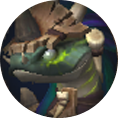
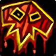
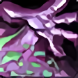
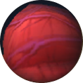
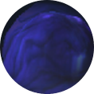
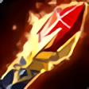
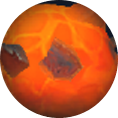

Alchymista v Chamber of Virulence
Vashnik the Malignant destiluje jed Ula'tek do zbraní kolem centrálního bazénku, obklopeného třemi fontánami — Krve (vzadu uprostřed), Stínu (vpravo) a Ohně (vlevo). Fight je jednofázový: bosse vodíte mezi dvojicemi fontán, zatímco jejich adds musí padnout dřív, než dorazí ke středové Malignant Cavity.
Imbibe a rotace fontán. Zhruba každých 90 sekund (při 100 Energy) se Vashnik napije ze dvou nejbližších fontán — získá +100 % damage daného typu jedu a +50 % max HP pro adds toho typu (stackuje, trvá 1,5 min) a navíc trvalý stack Toxic Vapor (soft enrage). Protože jsou fontány jen tři a berou se vždy dvě najednou, jedna fontána se nevyhnutelně opakuje dvakrát po sobě a její adds dostanou extra HP — cíl je zvolit trasu tak, aby se dvakrát nezopakoval zrovna Oheň (nejnebezpečnější na zdvojení). Doporučená trasa: začít na Oheň+Stín, pak rotovat proti směru hodinových ručiček (např. Oheň+Stín → Krev+Stín → ...).
Timing Imbibe (90 s / 100 Energy) i mechanika zdvojené fontány jsou teď potvrzené nezávisle Icy Veins, Method.gg i komunitním video guidem.
Schopnosti Vashnika
Fight kombinuje tankový management, add priority a rozlišování typu infekce podle aktivní fontány.
Vashnik samotný
Priorita: Oheň → Krev → Stín
Podle aktivní fontány
Mapa arény
Přímá kopie reálného raid plánu publikovaného guildou na raidstrats.gg — pozice, ikony i poznámky jsou přesně z jejich dat (včetně případných překlepů v poznámkách), nejde o mou interpretaci. Šipkami/tečkami pod obrázkem procházíte jednotlivé scény.
Začínáme Fialovou a červená, potom oranžová a fialová,
pak červená a oranžová atd.




Bloodlust na pull

Oranžový oltář - 2 ohnivé addky (jdou gripnpout a rootnout)
Fialový oltář - 5 shadow addek
Červený oltář - 1 velká adda, která se po smrti dělí (CC-immune)
Každý oltář zároveň rozdává korespodující debuffy
tak se napije ze dvou nejbližších fontán
aktivace addek, debuffů + raidwide dmg
každý Imbide zvýší dmg dalšího
Hráč dostane dotku, healing absord a 100% redukci na healing taken
Zároveň se kolem hráče udělá kolečko, kterým saje HP z ostatních
= group soak hráč si stoupne do skupinky a tím prohealuje svůj absorb a zbaví se debuffu
Healing absorb, z hráče lítá bordel odběhne od raidu a nechá se healovat

Ohnivá dotka, po dispellu raid-wide dmg, který je snížený vzdáleností od raidu
hráč odběhne do rozumné vzdálenosti a zažádá o dispell, nebo nechá dotku opadnout



Mass CC na fialové addky
Po znežití červené znežijeme fialové

Addky cleavujeme, DK gripne ohnivé addky
= zabít jednu, pak druhou, ne najednou

= zabít jednu, pak druhou, ne najednou
6 vetřin každou vteřinu dmg kolem sebe
Po expiraci vystřelí do 4 stran bordel
odejít od raidu
cca každých 45 vteřin raid-wide dmg
Tank buster - physical dmg
debuff na 200% physical dmg takne
Tauntswap na 1 stacku / po opadnutí
Přehled: tři oltáře, boss se napije ze dvou nejbližších. Pořadí: fialová+červená → oranžová+fialová → červená+oranžová... Bloodlust na pull.
Směr rotace fontán — pořadí párování oltářů v čase.
Mechanika červeného oltáře: Siphoning Infection — group soak, kdo ho má, stoupne si mezi ostatní.
Mechanika fialového oltáře: Stygian Infection — healing absorb, odejít od raidu a nechat se doléčit.
Mechanika oranžového oltáře: Exploding Infection — odejít do bezpečné vzdálenosti, pak dispel nebo nechat vyprchat.
Po zabití addů přesun bosse mezi fialovou a oranžovou; zmlátit červenou addu, mass CC fialové.
Tankové natáhnou bosse na fialovou, DK gripne ohnivé addy — zabíjet jednu po druhé, ne najednou.
Opakování: grip ohnivých addů k červené, boss zpět mezi červenou a fialovou.
Ostatní mechaniky: Plague Froth (odejít od raidu), Malignant Burst (~45s raid-wide), Dripping Fangs (tauntswap na 1. stacku).
Časová osa fightu
Pull
Tank umístí Vashnika mezi dvě fontány, které chcete jako první empowerovat. Bloodlust/Heroism na pull.
Energy → Imbibe → adds
Bez tvrdých fází — energie roste, Imbibe vymění empowerované fontány a infekce, adds musí padnout dřív, než dorazí ke Cavity, vyřešte Plague Froth. Cyklus se opakuje až do kill.
Co sledovat za tanka, healera a DPS
Tankování
- Táhněte bosse trasou, kde se dvakrát po sobě nezopakuje Oheň (začátek Oheň+Stín, pak proti směru hodinových ručiček).
- Swapujte hned na 1. stack Dripping Fangs, defenzivy při překrytí s infekcí.
Healing
- Připravte cooldowny na Malignant Burst a na Malignant Catalyst (~45s, Heroic+).
- Exploding Infection lze dispelovat pro bezpečnější/rychlejší explozi.
- Siphoning/Stygian Infection řešte soakem/absorb-removal, ne čistým healingem.
- Doléčte raid těsně předtím, než padne Burning Venom add.
Damage
- Držte add priority: Burning Venoms → Clotting Venom → Shrouded Venoms.
- Nikdy CC Clotting Venom, rozestupte se na smrt Shrouded Venoms.
- Burning Venoms zabíjejte jednoho po druhém, ne oba najednou — zvažte grip/banish na stagger.
- Typické rozdělení: silné AoE classy na Stín, zbytek na Oheň (nebo naopak).
Normal → Heroic → Mythic
| Obtížnost | Co se mění |
|---|---|
| Normal | Základní kit — Imbibe, fountain adds, adaptive infekce. |
| Heroic | Přidává Malignant Catalyst — orba nad Cavity střílí Catalytic Bile; zásah hráče = těžký Nature damage, žádný zásah = raid-wide damage. Vyžaduje vyhrazené interceptory. |
| Mythic | Přidává Malignant Tumors s Hardened Tumor (99 % redukce damage) — musí být nejdřív zasaženy Plague Wave, než je lze zabít. Add, který dorazí k Cavity, teď dává stackující 1min DoT místo okamžitého wipe. |
Kvíz k mechanikám
Šest otázek na hlavní mechaniky fightu. Vyberte odpověď — správná se zvýrazní zeleně, chybná červeně.